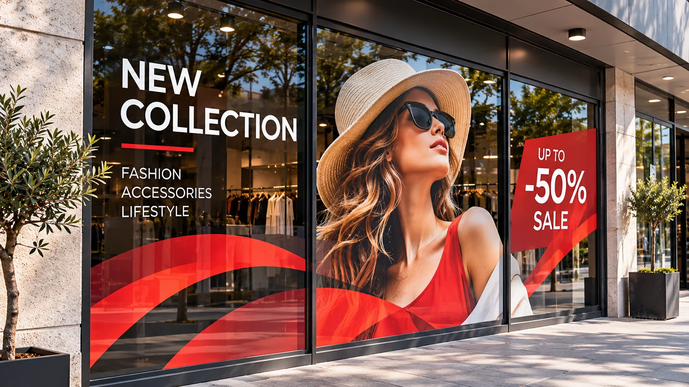
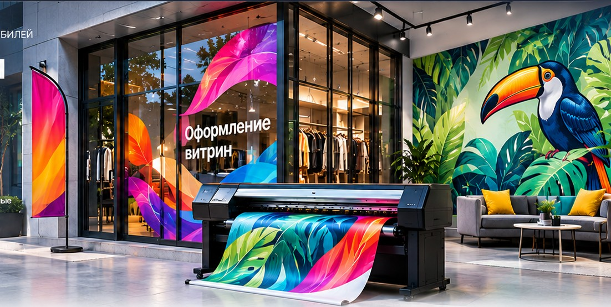
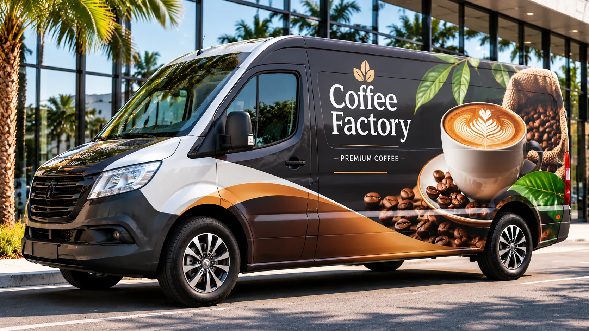
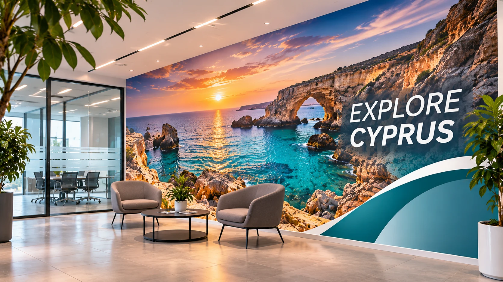
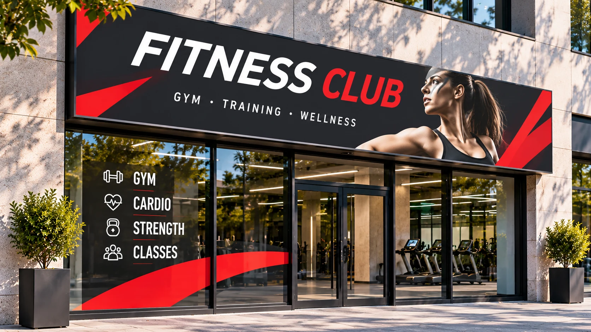
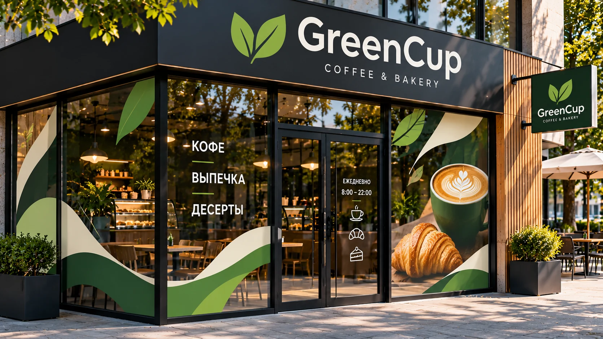
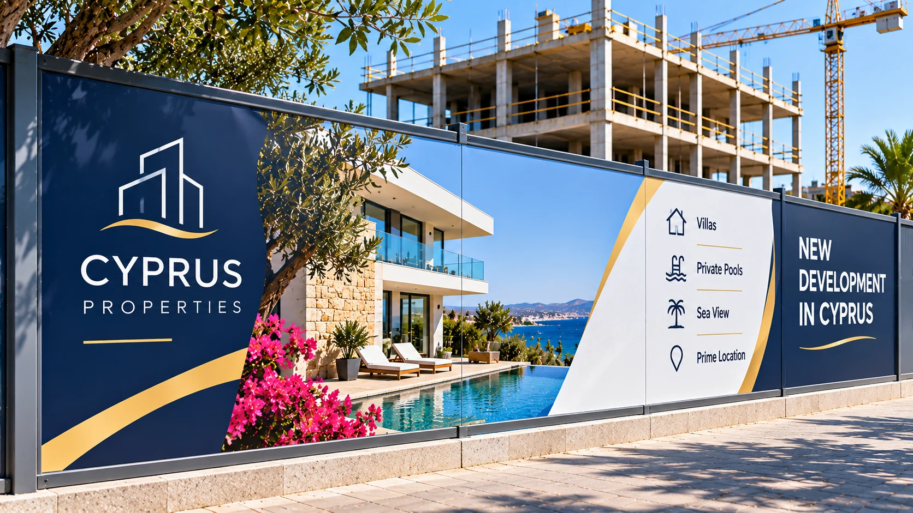
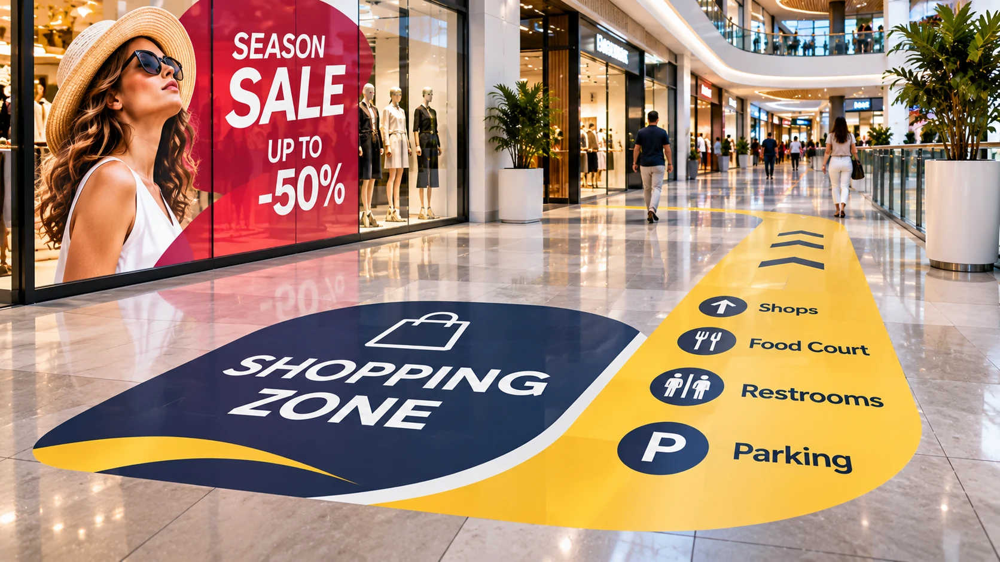
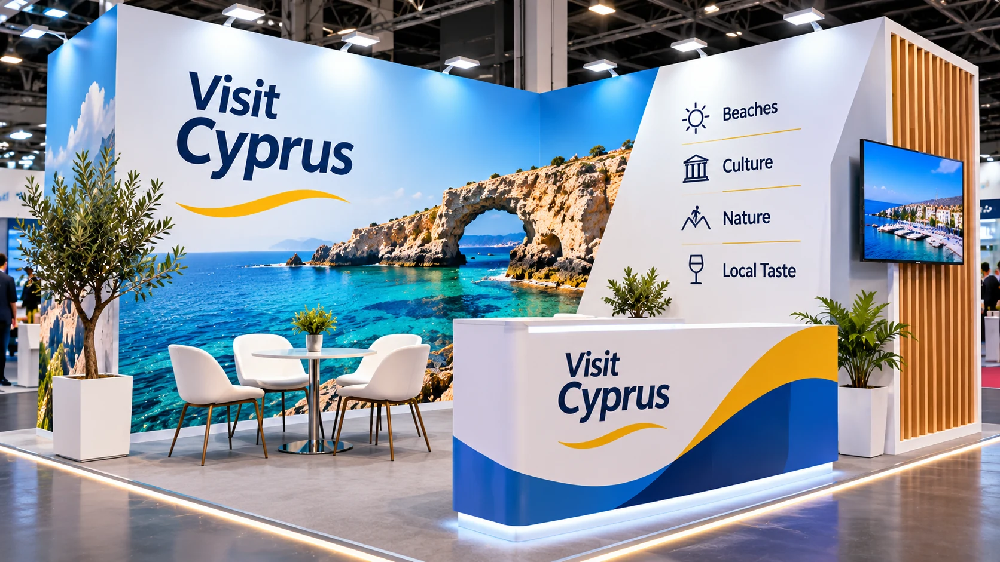

Витрины и окна
Рекламные кампании, сезонное оформление, изображения и графика на стеклянных поверхностях.

NTEO / ВИНИЛОВАЯ ПЕЧАТЬ / КИПР
Печатаем полноцветную рекламную графику на самоклеящейся виниловой плёнке и профессионально наклеиваем её на витрины, окна, автомобили, стены и другие поверхности. Работаем с коммерческими проектами по всему Кипру — от одного изображения до комплексного оформления объекта.

01 / ПРИМЕНЕНИЕ
Самоклеящаяся виниловая плёнка позволяет наносить полноцветные изображения, фотографии, фирменную графику и рекламные сообщения на самые разные гладкие поверхности.

Рекламные кампании, сезонное оформление, изображения и графика на стеклянных поверхностях.

Полноцветная виниловая графика для легковых автомобилей, фургонов, коммерческого транспорта и автопарков.

Фотопанно и декоративная графика для офисов, кафе, салонов, торговых и общественных помещений.

Печатная графика для рекламных панелей, информационных поверхностей и оформления фасадов.
Сезонные предложения, распродажи, рекламные кампании и временное оформление точек продаж.

Комплексное оформление коммерческих пространств, фасадов, витрин и других поверхностей в едином стиле.

Полноцветная виниловая графика на гладких панелях строительных ограждений: реклама жилых комплексов, визуализации проектов и информация о застройщике.

Рекламные изображения, указатели и навигационные элементы на полу торговых центров, магазинов и коммерческих помещений.

Оформление выставочных стендов, бренд-зон, фотозон, конференций и презентационных пространств.
02 / МАТЕРИАЛЫ
Внешний вид, поверхность и условия эксплуатации влияют на выбор материала. Подскажем подходящий вариант после уточнения задачи.
Яркая насыщенная поверхность. Подходит для рекламной графики и изображений.
Сдержанный внешний вид с меньшими бликами. Для интерьеров и витрин.
Для оформления стекла с сохранением обзора изнутри при подходящих условиях.
Подбор материала зависит от поверхности, формы, срока эксплуатации и условий монтажа.
03 / ПРОЦЕСС
Пришлите файл, фотографию поверхности или краткое описание задачи.
Согласуем размеры, материал, место применения и требования к монтажу.
Проверим макет и подготовим изображение к производству.
Изготовим графику и профессионально наклеим её на объекте по всему Кипру — после согласования поверхности, адреса и объёма работ.
06 / ПЕЧАТЬ И МОНТАЖ НА КИПРЕ
Не только печатаем — помогаем довести проект до готового результата. Подготовим полноцветную графику на подходящей самоклеящейся плёнке и профессионально наклеим её на согласованную поверхность.
Выполняем печать на самоклеящихся виниловых материалах, включая подходящие для цифровой печати серии ORACAL®. Подбираем плёнку с учётом поверхности, места установки и условий эксплуатации.
Устанавливаем напечатанную виниловую графику на витрины, окна, гладкие панели, стены и другие согласованные поверхности. Для каждого проекта заранее оцениваем основание и условия монтажа.
Организуем печать и монтаж в Лимассоле, Пафосе, Никосии, Ларнаке и других городах и районах Кипра. Уточните адрес объекта — согласуем возможность выезда.
Печать на плёнке для витрин магазинов, кафе и ресторанов, офисов, автомобилей, рекламных панелей, строительных ограждений, выставок и промо-кампаний.
04 / NTEO
Расскажите, что нужно напечатать. Укажите город и примерные размеры — мы уточним детали и подготовим расчёт.
Также можно написать нам напрямую: WhatsApp +357 97 587065
05 / FAQ
Да, подберём подходящую для цифровой печати серию ORACAL® или другой виниловый материал в зависимости от поверхности и условий эксплуатации. Пришлите размеры и задачу — уточним доступный вариант.
Для наружного применения подбирается материал с учётом срока эксплуатации, поверхности и погодных условий.
Да. Мы можем выполнить печать на подходящей самоклеящейся виниловой плёнке и профессионально наклеить готовую графику на согласованную поверхность. Работаем по всему Кипру; возможность и стоимость выезда зависят от адреса и объёма проекта.
Да, можно обсудить изготовление и получение готового материала без установки.
Нужна плоттерная резка?
Для одноцветных надписей, логотипов и графики без полноцветной печати перейдите в раздел плоттерной порезки.
Перейти к плоттерной порезке ↗